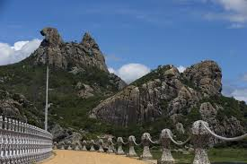
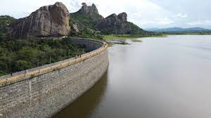

Pedra da Galinha Choca

A Pedra da Galinha Choca é um dos principais cartões-postais do município de Quixadá, no estado do Ceará, Brasil. Localizada no sertão central cearense, essa formação rochosa chama atenção não apenas por sua imponência natural, mas principalmente por seu formato peculiar, que lembra uma galinha agachada chocando ovos — daí o nome popular.
Composta por monólitos de granito que se destacam na paisagem semiárida da região, a Pedra da Galinha Choca faz parte do conjunto de inselbergs de Quixadá, formações geológicas que se erguem isoladas em meio ao terreno plano. Esses monumentos naturais são resultado de milhões de anos de erosão e processos geológicos, sendo muito valorizados tanto por cientistas quanto por turistas.
Além de seu valor estético e geológico, o local é cercado por lendas e simbolismos culturais. Para os moradores da região, a Pedra da Galinha Choca é motivo de orgulho e inspiração, aparecendo frequentemente em obras de arte, poesias e músicas. Ao redor da pedra, existe um parque ambiental com trilhas ecológicas e mirantes, que permite aos visitantes uma vista panorâmica da cidade e das formações rochosas ao redor.
Açude Cedro

O Açude do Cedro é um dos mais importantes marcos históricos e culturais do município de Quixadá, no Ceará, e também um dos maiores símbolos da engenharia hidráulica do Brasil no período imperial. Sua construção foi iniciada em 1890, durante o reinado de Dom Pedro II, como resposta às graves secas que afetavam o Nordeste. A obra só foi concluída em 1906, sendo o primeiro açude público de grande porte construído no país.
Localizado a cerca de 5 km do centro de Quixadá, o Açude do Cedro destaca-se não apenas pela sua função original de armazenar água, mas também pelo seu valor arquitetônico. Suas paredes são feitas de pedras empilhadas artesanalmente, sem o uso de cimento, em uma técnica conhecida como "mão sobre mão", que resistiu ao tempo por mais de um século. A estrutura conta ainda com comportas, canais e escadarias em granito que revelam a sofisticação do projeto para a época.
O local também tem grande importância simbólica e cultural. O próprio imperador Dom Pedro II visitou a região em 1889 e se impressionou com a paisagem do entorno — marcada por monólitos como a famosa Pedra da Galinha Choca — e pela hospitalidade do povo cearense. A visita imperial foi registrada em fotografias e documentos históricos e marcou o início efetivo das obras do açude.